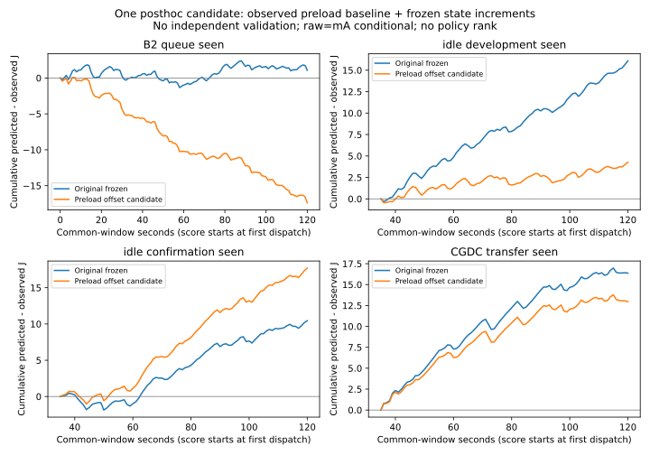

RESIDENT-PRELOAD-OFFSET-01 · 후보1개 · 독립 확인0 · 기기 명령0 · experiment_ready=false.
전체120초 예측·정책 순위·정확도 PASS가 아닙니다. 기존 동결본과 AP 후보는 그대로입니다.
첫 dispatch 전20초 명목창의 관측 평균전력으로 원래 상태 전력에 같은 W를 더합니다. 이후 전류·AP는 예측 입력이 아닙니다. 실제 미래 lane 일정이 주어진 조건부 계산이며, 네 세션의 결과를 이미 본 뒤 정한 후보입니다.
| 자료 | 비교 시작→끝 s | 관측 J | 기존 차이 J | 후보 차이 J |
|---|---|---|---|---|
| B2 | 0.009285→120 | 154.675249 | +1.071731 | −17.385376 |
| 유휴 개발 | 35.007436→120 | 96.721891 | +16.087255 | +4.280380 |
| 유휴 확인 | 35.007297→120 | 102.517717 | +10.453317 | +17.702203 |
| CG_DC 전이 | 35.008859→120 | 96.464871 | +16.364447 | +12.956830 |
차이=예측−관측. 2개선/2악화이므로 채택하지 않습니다. 부하 전 유휴를 이후에도 일정하게 전용하기 어렵다는 결과이며, 특정 환경·온도·네트워크 원인 증명은 아닙니다. raw=mA 조건부·절대 에너지 정확도 미인증.

다음에 필요한 정보는 같은 resident·준비에서 부하 없이도 생기는 시간 변화와 짧은 부하 후 효과의 구분입니다. 무부하1＋등록부하1의 구현·서명 APK·실행 계획을 PC에서 준비했습니다. 두 세션/40추론/2,090초, 기기 미검증·미승인·미소비입니다. 새 실측 결과나 정확도 PASS는 없습니다.
판정·최소 해결 조건 · 입력·재현 명령 · 구간 점수 · 누적 경로 · 정보 경계·해시 · PNG · PC 검증